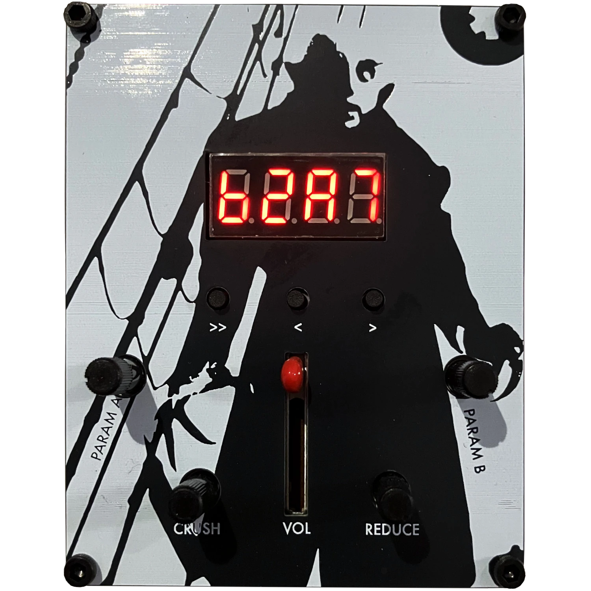
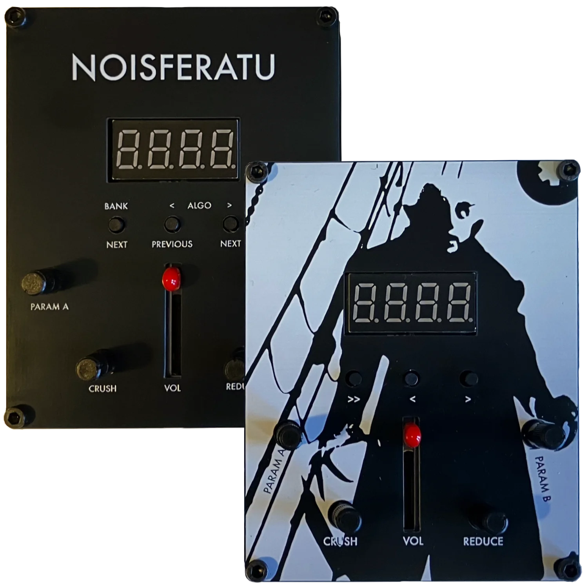
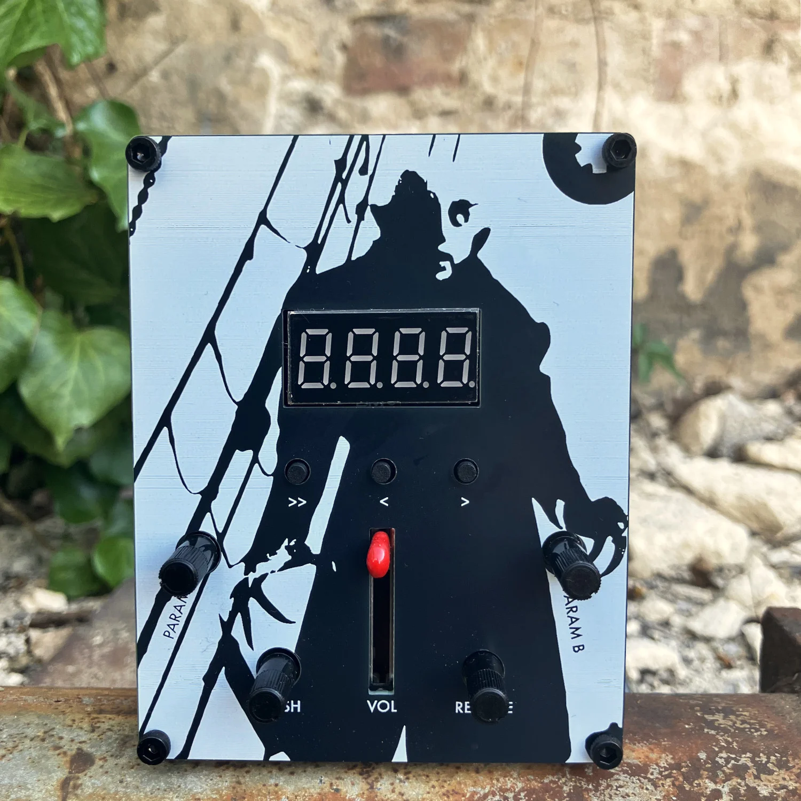
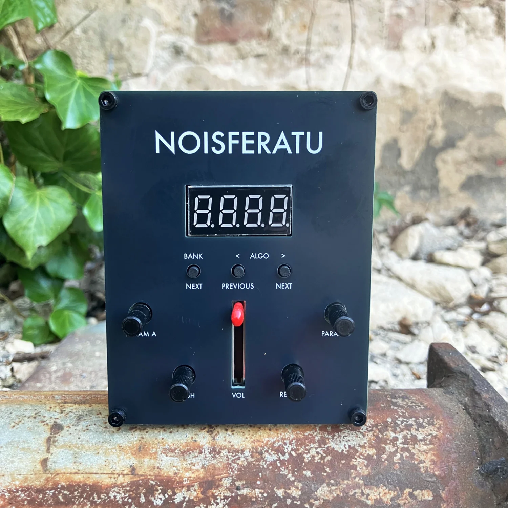

Noisferatu
Infinite textures and digital mayhem




NOISFERATU is a compact handheld generative texture synthesizer. 45 algorithms across 5 banks produce crackling textures, noisy scapes, evolving drones, harmonic blips and digital chaos. Shaped but never fully controlled by four knobs.
They generate endlessly evolving textures, tones and rhythmic patterns. Designed to surprise, resist repetition and never quite settle. Dial in a crackling drone, a stuttering melody, or pure digital chaos.
The front and back panel can be flipped.
It uses and abuses creative approaches like generative wavetables, BitBend address manipulation, probability gates, bitwise logic operations and wild combinations of these.
Powered via USB-C.
Firmware and schematics are released open source.